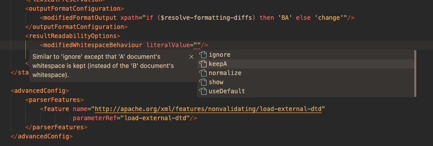

Comparing XML
Introduction
This section describes the support for DeltaXignia's DCP format provided by this extension. DCP is used by DeltaXignia's XML Compare solution to help tailor a comparison for a specific document type or requirement.

Extending standard XML editor features
You can create or update Simple DCP files with any XML editor with XML schema 1.0, or (preferably) XML Schema 1.1 support, like Oxygen XML. To help with more complex XML comparison features, DCP supports features such as the input parameter referencing and XPath expressions. This extension includes specific support for these features.
Feature Summary
- XML Element auto-completion
- XML Attribute auto-completion
- Auto-completion for referenced parameter names
- Auto-completion for referenced built-in resources
- XPath syntax highlighting
- XPath formatting
- Highlighting for Attribute Value Templates (AVTs)
- Linter for checking XPath expressions
- Quick navigation to referenced XSLT files
- Specialised XML outline tree-view